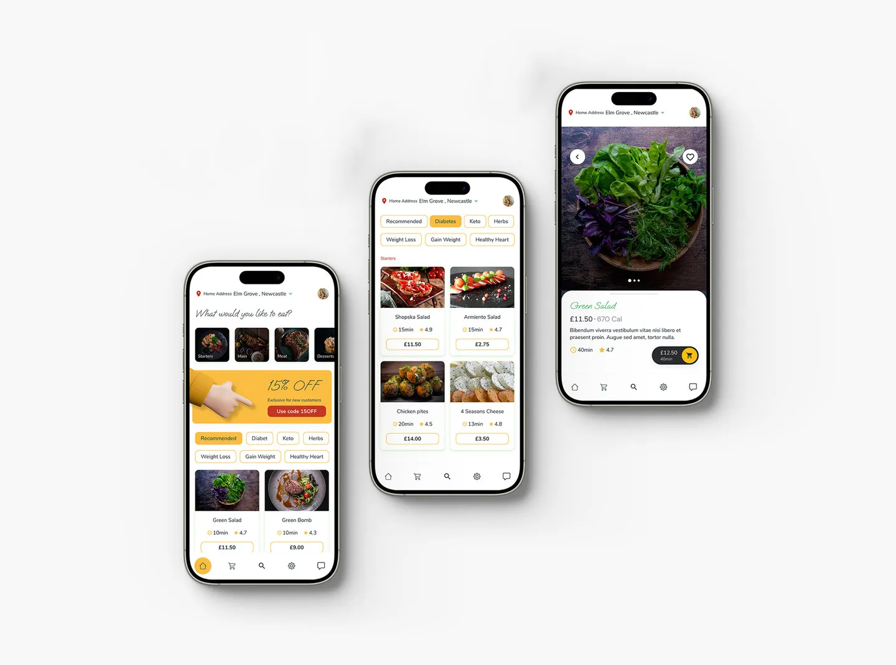
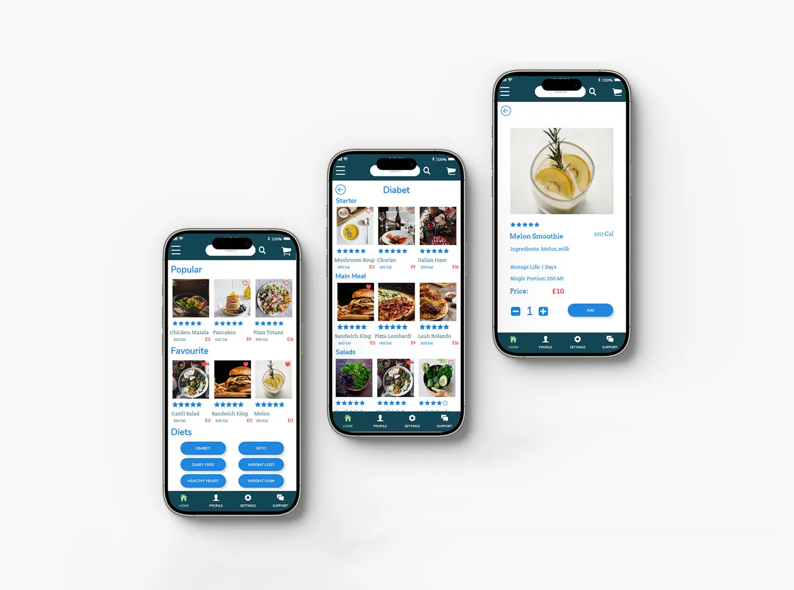
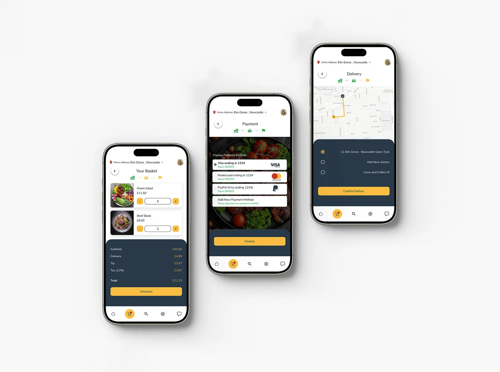
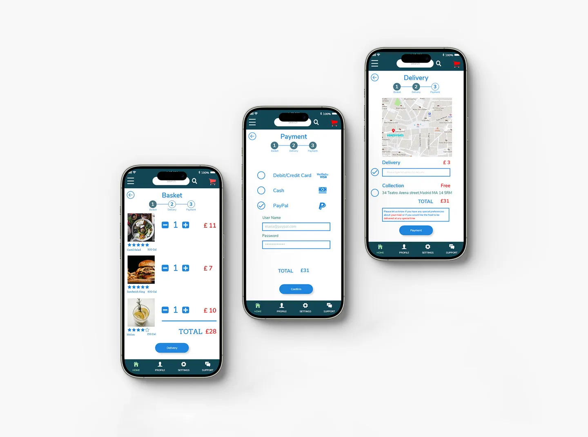

Context
A production food-ordering app had weak visual hierarchy and inconsistent interface patterns.
A production food-ordering app had weak visual hierarchy and inconsistent interface patterns.
Users struggled to compare options and complete checkout confidently due to cognitive overload.
Create clear structure, predictable flows, and faster product-to-checkout progression.
Ship a system-driven redesign with reusable components and one-primary-action logic.
Eight clear delivery phases from discovery to post-launch support.
Defined product goals, pain points, and UX success criteria with stakeholders.
Usability testing with 5 users identified hierarchy, CTA, and navigation issues.
Reworked content structure for faster comparison and clearer decision paths.
Mapped low-fidelity user journeys for browsing, basket, payment, and delivery.
Created high-fidelity interactive prototypes to validate redesigned flows.
Refined layout, copy hierarchy, and interaction cues through feedback rounds.
Retested core journeys to reduce hesitation and improve completion confidence.
Delivered final UX/UI files with components, annotations, and implementation guidance.
Card layouts were standardized so users can quickly scan products, compare options, and identify next actions without reading unnecessary detail.
Basket, payment, and delivery were structured as one clear progression to reduce hesitation and remove ambiguity at each checkout decision point.
A reusable component system ensured visual consistency, reduced re-learning, and made future product growth possible without redesign debt.
Product walkthrough
A real interaction capture showing the redesigned Healthy Eats experience across key moments.
Transformation
Side-by-side interaction comparisons that highlight hierarchy, clarity, and checkout flow improvements.




Outcomes
The redesign replaced friction-heavy journeys with predictable, system-led product and checkout flows.